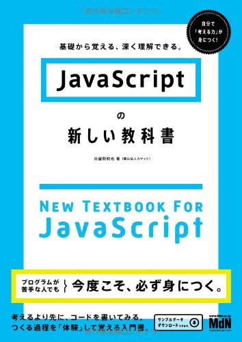

メイン
トップ
最近の取り組み
本ページのリニューアル作業
更新情報
- ページをリニューアルしました．旧ページはコチラ
制作物
mainNEW
2015.6.18 追加
ミーティング資料
PowerPoint ※PowerPoint Onlineが開きます．
制作ページ・ソフト
講演感想・SPI対策
- クラウドについての特別講演.pdf
- SPI対策言語02.pdf
- SPI対策言語01.pdf
研究過程
躓いたところのメモ
参考書籍
メモ
-
SQLでサブクエリ．(2015.5.28)
SELECT * FROM member WHERE id = (SELECT id FROM user_logs WHERE date = '2015-05-27' AND end_time IS NULL);
括弧の前がイコールでは，値が複数の場合処理できない．イコールをINにすれば解決．
SELECT * FROM member WHERE id IN (SELECT id FROM user_logs WHERE date = '2015-05-27' AND end_time IS NULL);
参考ページ -
Google カレンダーをホームページに埋め込む際予定が反映されなかった．(2015.5.20)
Chromeで作業する際，埋め込みたいカレンダーがあるgoogleアカウントとは別のアカウントでChrome自体にログインしている場合に起こった問題．
このページの説明の通りGoogleカレンダー埋め込み支援ツールまで進むと，Chromeにログインしている方のアカウントに自動で切り替わってしまう．そのため，そこで生成されたiframeコードは埋め込みたいカレンダーのものとは別のコードが表示されていてうまくいかない．今回は別のブラウザで作業することで回避．
-
phpで作った卒検支援ページをローカルからhetemlサーバーへあげるときに起きた問題．(2015.5.19)
ローカル環境では動いていたが論理演算子でエラーが発生したためコードを変更．
if(!empty($_POST['come'] or $_POST['out'])) //ローカルでは動いたがhetemlはエラー
if(!empty($_POST['come']) or (!empty($_POST['out']))) //これならばhetemlでも動いたまた，下で記述したエラー制御演算子＠「アットマーク」もhetemlではエラーになった．
(追記：2015.05.21)ミーティングで，そもそもemptyの中で論理演算子というのはいかがなものかということで調査．
empty()は引数に指定した変数に値がセットされているかどうか調べる言語構造の一部で，0か空ならTRUE，それ以外はFALSEを返すというもの．この説明からするとやはりemptyの引数の中で論理演算をするというのは間違っているように思える． -
PHPでの＠「アットマーク」の意味．(2015.5.11)
PHPの＠「アットマーク」は「エラー制御演算子」といい，エラーがあってもエラーメッセージを出力させないようにするためのもの．
-
SQLでNULLのレコードを削除したい．(2015.5.11)
delete from テーブル名 where レコードのフィールド（idなどを指定）=削除するレコード値で削除するレコード値をNULLで実行したところうまくいかなかった．調べたところNULLとの比較はできないとのこと．この場合はレコードのフィールド（idなどを指定） IS NULLまたはIS NOT NULLで行う．
-
同じネットワーク内のPCからXAMPP関連の画面を開けるようにする．(2015.5.11)
こちらの記事と，こちらの記事を参考に同じネットワーク内のPCからXAMPP関連の画面を開けるようにした．これで同じネットワーク内であれば作成したPHP・DBを用いたページを表示させることができるようになった．
※場所: %XAMPP\apache\conf\extra\httpd-xampp.conf
※# Require localの「#」を忘れないように． -
SyntaxHighlighterの動作(2015.4.17)
こちらの記事（All About）を参考にSyntaxHighlighterを導入したが下の「ローカルとサーバ上での違い」を書いている時にimg= の後に実際には書いていない文が表示されている．現在原因の特定に至らず．
-
ローカルとサーバ上での違い？？(2015.4.17)
ローカルでは表示される画像がサーバーに上げると表示されない．原因は先頭のスラッシュ

src="のあとのスラッシュがあるとローカルでは画像が表示されたがサーバーに上げた場合画像が表示されなかった．

これならば問題なく表示された．もちろんコチラの書き方が正しいのでコチラにすべき．
参考書籍
-

TECHNICAL MASTER
はじめてのHTML+CSS -

ノンプログラマのための
JavaScriptはじめの一歩 - 
JavaScriptの新しい教科書